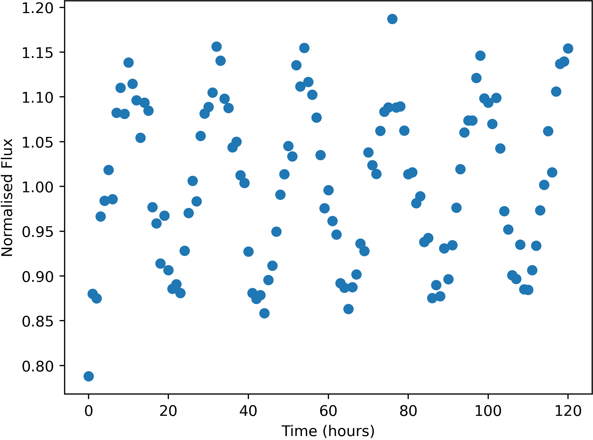

Some stars in the sky were found to change in apparent brightness over time, usually following a periodic trend.

Example of a variable star lightcurve - star BackS178454
Units of the variable data are:
Uncertainties in this data (one standard deviation) are:
Here is a list of the flashes detected, with their approx. positions and number of photons detected. Positions are given by where they would appear in the relevant wide-field camera image. Positions are only accurate to 0.05 degrees (one standard deviation).
The X-Ray camera is sensitive to burts of more than 174 photons only.
| Name | Direction | X | Y | Photon-Count |
|---|---|---|---|---|
| FE01 | Top | 27.40 | 10.69 | 659 |
| FE02 | Front | 22.83 | 21.26 | 378 |
| FE03 | Bottom | -1.82 | -17.24 | 345 |
| FE04 | Right | 10.62 | -34.49 | 813437 |
| FE05 | Front | 6.85 | 11.55 | 454 |
| FE06 | Left | -2.24 | -37.00 | 603 |
| FE07 | Bottom | 4.84 | 13.89 | 311 |
| FE08 | Top | 14.58 | -16.34 | 342 |
| FE09 | Bottom | -29.25 | -9.00 | 942 |
| FE10 | Top | 29.93 | -9.59 | 352 |
| FE11 | Back | -5.84 | 32.90 | 1067 |
| FE12 | Left | -44.60 | -25.62 | 67330 |
| FE13 | Top | -34.03 | -13.69 | 810 |
| FE14 | Back | -18.61 | -24.43 | 496 |
| FE15 | Top | -34.95 | -13.88 | 805 |
| FE16 | Right | -12.43 | -24.77 | 457153 |
| FE17 | Front | 32.37 | 18.96 | 625 |
| FE18 | Bottom | -31.08 | -10.12 | 893 |
| FE19 | Bottom | -21.78 | 5.62 | 528 |
| FE20 | Bottom | -21.86 | 5.43 | 523 |
| FE21 | Right | 19.93 | -27.29 | 791 |
| FE22 | Front | 27.29 | 28.60 | 983 |
| FE23 | Bottom | 29.86 | -29.21 | 646 |
| FE24 | Bottom | 30.59 | 0.29 | 29258221 |
| FE25 | Right | -6.88 | -10.51 | 1014539 |
| FE26 | Front | 18.70 | -4.85 | 451 |
| FE27 | Right | -3.70 | -21.97 | 178076 |
| FE28 | Right | -4.41 | 26.64 | 446 |
| FE29 | Front | 31.97 | 19.21 | 660 |
| FE30 | Back | 39.72 | -22.31 | 74470 |
| FE31 | Back | -1.47 | 10.25 | 797 |
| FE32 | Left | -7.31 | 37.01 | 564 |
| FE33 | Front | 22.90 | 21.35 | 361 |
| FE34 | Top | -34.02 | -13.69 | 827 |
| FE35 | Top | -41.40 | 26.01 | 494 |
| FE36 | Top | -40.20 | -38.07 | 1038 |
| FE37 | Top | 40.82 | -6.41 | 811 |
| FE38 | Front | 11.46 | -2.80 | 374707 |
| FE39 | Bottom | -22.69 | 2.55 | 408 |
| FE40 | Top | 41.35 | -6.12 | 823 |
| FE41 | Top | 22.79 | 19.55 | 349 |
| FE42 | Left | -7.08 | 37.75 | 555 |
| FE43 | Back | -26.48 | -34.37 | 1160 |
| FE44 | Left | -0.07 | 29.86 | 1418 |
| FE45 | Front | -31.30 | 38.05 | 864 |
| FE46 | Bottom | 4.35 | -28.95 | 735 |
| FE47 | Front | -31.15 | 37.93 | 910 |
| FE48 | Bottom | -31.03 | -9.31 | 924 |
| FE49 | Back | -18.33 | 13.61 | 7778 |
| FE50 | Right | -20.01 | 5.04 | 8463522 |
| FE51 | Top | -41.27 | 25.42 | 495 |
| FE52 | Back | 31.53 | -18.64 | 537 |
| FE53 | Back | -5.28 | 30.06 | 583 |
| FE54 | Back | 13.56 | -41.63 | 205118 |
| FE55 | Front | -33.29 | 8.30 | 349 |